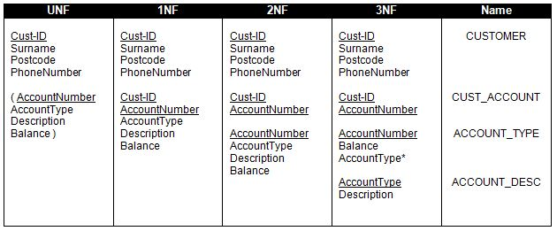
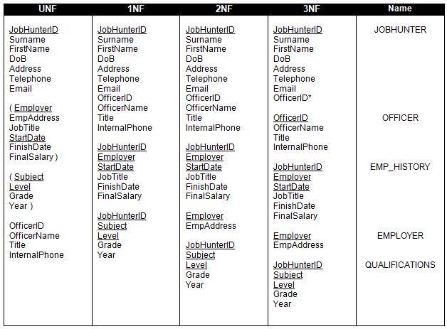
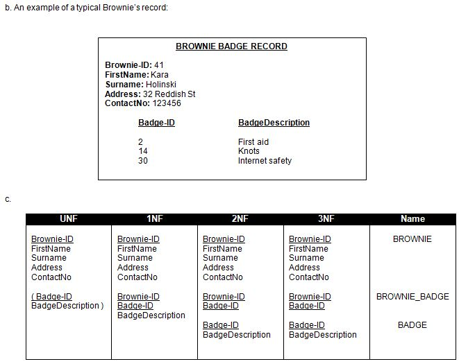

<div id="jsn-maincontent" class="span9 order1 row-fluid">
  <div id="jsn-maincontent_inner">
    <div id="jsn-centercol">
      <div id="jsn-centercol_inner">
        <div id="jsn-mainbody-content" class="jsn-hasmainbody">
          <div id="jsn-mainbody-content-inner1">
            <div id="jsn-mainbody-content-inner2">
              <div id="jsn-mainbody-content-inner3">
                <div id="jsn-mainbody-content-inner4" class="row-fluid">
                  <div id="jsn-mainbody-content-inner" class="span12 order1">
                    <div id="jsn-mainbody">
                      <div id="system-message-container"></div>

                      <div
                        class="item-page"
                        itemscope
                        itemtype="https://schema.org/Article"
                      >
                        <meta itemprop="inLanguage" content="en-GB" />

                        <div itemprop="articleBody">
                          <p>&nbsp;</p>
                          <h1 style="text-align: center">
                            Section 3 - Answers
                          </h1>
                          <p>
                            <strong>TASK 1.</strong> The aims of normalisation
                            are to get rid of adding, deleting and amending
                            anomolies (that lead to data inconsistencies) and to
                            remove data redundancy.
                          </p>
                          <p><strong>TASK 2.</strong></p>
                          <p>
                            <strong
                              ></strong>
                          </p>
                          <p>&nbsp;Some notes about the answer to TASK 2</p>
                          <ul>
                            <li style="list-style-type: none">
                              <ul style="list-style-type: disc">
                                <li>
                                  UNF - We can pick Cust-ID for our primary key.
                                </li>
                                <li>
                                  UNF to 1NF - We need to enter in the details
                                  of each customer once. Each customer, however,
                                  can have many accounts, so we move the details
                                  we will record about each account into its own
                                  group.
                                </li>
                                <li>
                                  1NF to 2NF - AccountNumber, AccountType,
                                  Description and Balance do not depend on the
                                  Cust-ID. These attributes are therefore moved
                                  into their own group and a Primary Key is
                                  selected for it, in this case, AccountNumber
                                  is the most obvious choice. Note that we have
                                  a group with a compound primary key but no
                                  non-key attributes. This is not a problem!
                                </li>
                                <li>
                                  2NF to 3NF - We are checking to see if any
                                  non-key attributes clearly depend upon any
                                  other non-key attributes. AccountDescription
                                  is dependent on the type of account. Therefore
                                  we move this non-key attribute into its own
                                  group along with the non-key attribute it is
                                  dependent upon. We make AccountType the
                                  primary key in the new group because it is the
                                  non-key attibute that the other non-key
                                  attribute depends upon. Note also that this
                                  primary key is not a number but a word. This
                                  is fine, so long as all values of the primary
                                  key in that table are unique, which they will
                                  be (Gold, Platimum, Silver). We then signal
                                  that AccountType is a foreign key in the old
                                  group by putting a star next to it.
                                </li>
                                <li>
                                  NAMES - We finally give some suitable names to
                                  the tables we have ended up with. The table
                                  with a comound primary key has a name that was
                                  derived from a combination of the two tables
                                  the parts of the compound key originated from.
                                </li>
                              </ul>
                            </li>
                          </ul>
                          <p><strong>TASK 3.</strong></p>
                          <p>
                            
                          </p>
                          <p>Some notes about the answer to TASK 3</p>
                          <ul style="list-style-type: disc">
                            <li style="list-style-type: none">
                              <ul style="list-style-type: disc">
                                <li>
                                  UNF - We can pick StudentID for our primary
                                  key.
                                </li>
                                <li>
                                  UNF to 1NF - We need to enter in the details
                                  of each student once. Each student, however,
                                  can take many modules, so we move the details
                                  we will record about each module into its own
                                  group.
                                </li>
                                <li>
                                  1NF to 2NF - CourseName, LecturerID,
                                  LecturerSurname and LecturerInitial do not
                                  depend on StudentID. These attributes are
                                  therefore moved into their own group. We are
                                  left with a table with only a compound primary
                                  key and no non-key attributes. This is not a
                                  problem! We also need to select a primary key
                                  for the the new group. We can pick
                                  CourseNumber.
                                </li>
                                <li>
                                  2NF to 3NF - We are checking to see if any
                                  non-key attributes clearly depend upon any
                                  other non-key attributes. LecturerSurname and
                                  LecturerInitial are both dependent on a
                                  Lecturer’s ID. Therefore we move these non-key
                                  attributes into their own group. We make
                                  LecturerID the primary key in the new group.
                                  We then signal that LecturerID is a foreign
                                  key in the old group by puuting a star next to
                                  it.
                                </li>
                                <li>
                                  NAMES - We finally give some suitable names to
                                  the tables we have ended up with. The table
                                  with a comound primary key has a name that was
                                  derived from a combination of the two tables
                                  the parts of the compound key originated from.
                                </li>
                              </ul>
                            </li>
                          </ul>
                          <p><strong>TASK 4.</strong></p>
                          <p>
                            
                          </p>
                          <p>Some notes about the answer to TASK 4</p>
                          <ul style="list-style-type: disc">
                            <li style="list-style-type: none">
                              <ul style="list-style-type: disc">
                                <li>
                                  UNF - The first job is to list all the
                                  attributes. For each camera’s details, the
                                  part number, the name of the part, the
                                  manufacturer’s ID and the manufacturer’s name
                                  are all entered over and over again. This is a
                                  repeating group. We put it in brackets. We
                                  also identify the camera’s model as a suitable
                                  primary key (we are told that it is unique)
                                  and we can identify the part number as a
                                  suitable key for the repeating group.
                                </li>
                                <li>
                                  UNF - 1NF We move the repeating group over
                                  into its own group. We then add the camera’s
                                  primary key to this group to make a compound
                                  primary key.
                                </li>
                                <li>
                                  1NF - 2NF The part number, the ID of the
                                  manufacturer of the part and the part
                                  manufacturer’s name are all directly dependent
                                  upon the part’s ID. Knowing the camera model
                                  will not allow you to identify any of these
                                  attributes in itself.
                                </li>
                                <li>
                                  2NF - 3NF The part manufacturer’s name is
                                  directly related to the part manufacturer’s
                                  ID. These non-key attributes are moved into
                                  their own group. The part manufacturer’s ID is
                                  made the primary key in this new group. It is
                                  also left as a foreign key in the PARTS group.
                                </li>
                                <li>
                                  NAMES - We finally give some suitable names to
                                  the tables we have ended up with. The table
                                  with a comound primary key has a name that was
                                  derived from a combination of the two tables
                                  the parts of the compound key originated from.
                                </li>
                              </ul>
                            </li>
                          </ul>
                          <p><strong>Task 5.</strong></p>
                          <p>
                            
                          </p>
                          <p><strong>Task 6.</strong></p>
                          <p>
                            
                          </p>
                          <p><strong>TASK 7.</strong></p>
                          <p style="margin-left: 30px">
                            CUSTOMER (<span style="text-decoration: underline"
                              >Cust-ID</span
                            >, Surname, Postcode, PhoneNumber)
                          </p>
                          <p style="margin-left: 30px">
                            CUST_ACCOUNT (<span
                              style="text-decoration: underline"
                              >Cust-ID</span
                            >,
                            <span style="text-decoration: underline"
                              >AccountNumber</span
                            >)
                          </p>
                          <p style="margin-left: 30px">
                            ACCOUNT_TYPE (<span
                              style="text-decoration: underline"
                              >AccountNumber</span
                            >, Balance, AccountType*)
                          </p>
                          <p style="margin-left: 30px">
                            ACCOUNT_DESC (<span
                              style="text-decoration: underline"
                              >AccountType</span
                            >, Description)
                          </p>
                          <p><br /><strong>TASK 8.</strong></p>
                          <p style="margin-left: 30px">
                            STUDENT (<span style="text-decoration: underline"
                              >StudentID</span
                            >, StudentSurname, StudentInitial, StudentDofB)
                          </p>
                          <p style="margin-left: 30px">
                            STUDENT_COURSE (<span
                              style="text-decoration: underline"
                              >StudentID</span
                            >,
                            <span style="text-decoration: underline"
                              >CourseNumber</span
                            >)
                          </p>
                          <p style="margin-left: 30px">
                            COURSE (<span style="text-decoration: underline"
                              >CourseNumber</span
                            >, CourseName, LecturerID*)
                          </p>
                          <p style="margin-left: 30px">
                            LECTURER (<span style="text-decoration: underline"
                              >LecturerID</span
                            >, LecturerSurname, LecturerInitial)
                          </p>
                          <p>
                            <strong style="line-height: 1.5">TASK 9.</strong>
                          </p>
                          <p>
                            a. Each Brownie’s personal details are unnecessarily
                            duplicated. A Brownie’s details will be recorded in
                            both the Brownie’s file and the Badge file. In
                            addition, each Brownie’s details might be recorded
                            more than once in the Badge file for each badge they
                            collect. Apart from data redundancy, the same
                            Brownie’s details might be incorrectly entered in
                            one record, leading to data inconsistency. Another
                            example where this might happen, is in the
                            description of each badge. The description will have
                            to be entered into the Badge file over and over
                            again (data redundancy) and has the potential to be
                            incorrectly entered differently in one or more
                            records, resulting in data inconsistency.
                          </p>
                          <p>
                            
                          </p>
                          <p>
                            <strong style="line-height: 1.5">UNF - 1NF</strong
                            ><span style="line-height: 1.5">&nbsp;</span
                            ><br />Repeating groups are removed into their own
                            group. A compound key is made so that the repeating
                            group is linked to the group of attributes that need
                            to be entered in only once (each Brownie’s details).
                          </p>
                          <p>
                            <strong>1NF - 2NF</strong> <br />Non-key attributes
                            that depend on only part of compound keys are
                            removed into their own group.
                          </p>
                          <p>
                            <strong>2NF - 3NF</strong> <br />Non-key attributes
                            that depend upon other non-key attributes are moved
                            into their own group. (There are no examples of this
                            in this example).
                          </p>
                          <p>
                            d. Converting to the annotation we have been using,
                            we have:
                          </p>
                          <p style="margin-left: 30px">
                            BROWNIE (<span style="text-decoration: underline"
                              >Brownie-ID</span
                            >, FirstName, Surname, Address, ContactNo)
                          </p>
                          <p style="margin-left: 30px">
                            BROWNIE_BADGE (<span
                              style="text-decoration: underline"
                              >Brownie-ID</span
                            >,
                            <span style="text-decoration: underline"
                              >Badge-ID</span
                            >)
                          </p>
                          <p style="margin-left: 30px">
                            BADGE (<span style="text-decoration: underline"
                              >Badge-ID</span
                            >, BadgeDescription)
                          </p>
                          <p><span style="line-height: 1.5">&nbsp;</span></p>
                        </div>
                      </div>
                    </div>
                  </div>
                </div>
              </div>
            </div>
          </div>
        </div>
      </div>
    </div>
  </div>
</div>
